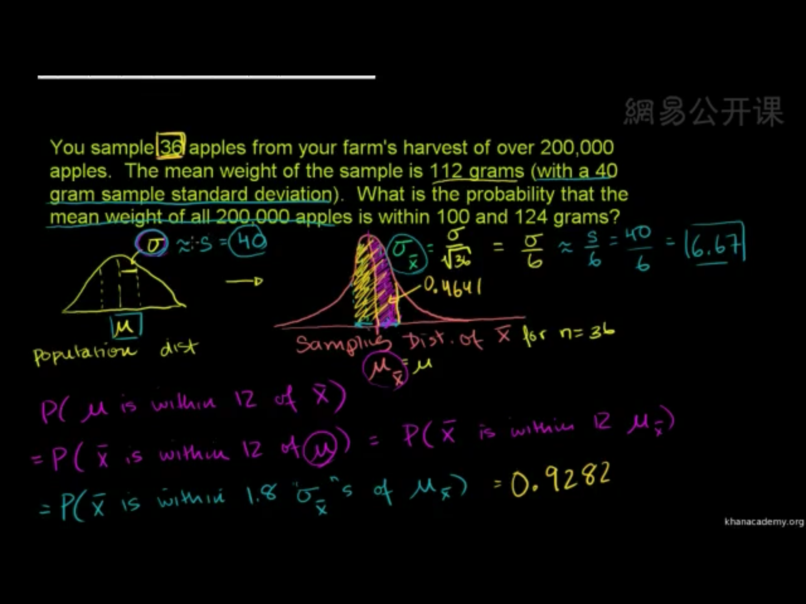

中心极限定理(Central limit theorem)
条件：相互独立的随机变量。
随着样本容量（sample size）的增大，抽样样本均值/样本和的概率分布会靠近正态分布。$$SampleSize \to \infty \Rightarrow NormlDistribution$$
抽样分布与样本分布的关系：
1、均值：$\mu_{\bar{x}} = \mu$
2、方差：$\sigma_{\bar{x}}^2=\frac{\sigma^2}{n}$
在实际应用中，我们不知道研究对象整体的平均值、标准差之类的统计参数，我就们可以利用中心极限定理，用抽样数据的均值、标准差去计算整体样本的统计参数。
来看一道kehan学院的题帮助理解中心极限定理以及正态分布的实际应用。
伯努利分布的均值和方差公式
对于：$X\sim B(n,p)$
均值$\mu$：所有取值的加权和：$$\mu=p$$方差$\sigma^2$：离均值或期望值的距离的平方的概率加权和： $$\sigma^2=p(1-p)$$
置信区间
一个概率样本的置信区间（英语：Confidence interval，CI），是对产生这个样本的总体的参数分布（Parametric Distribution）中的某一个未知参数值，以区间形式给出的估计。在上题中来看就是根据苹果的样本给出总体苹果大小的均值在110~124(区间)的概率(可信度)。
小样本$n<30$采用T分布而不采用正态分布。样本容量太小导致我们低估了标准差。